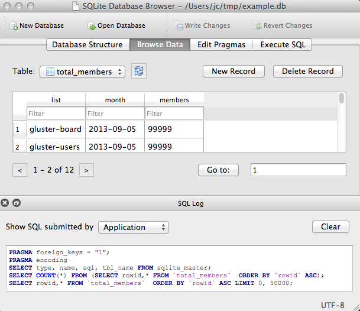
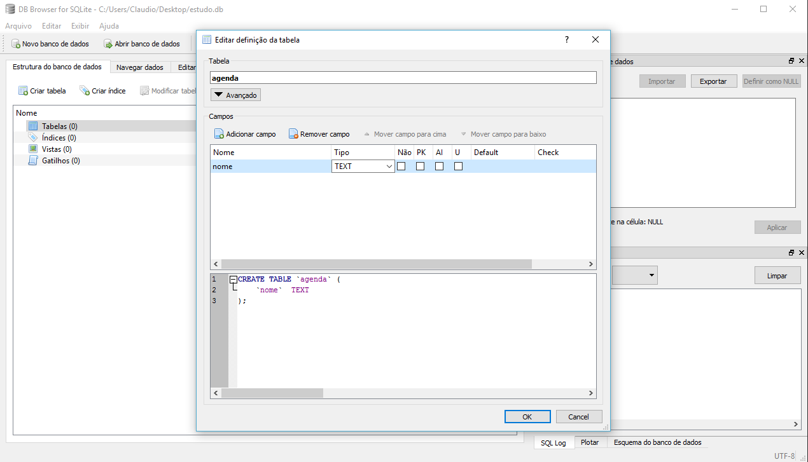
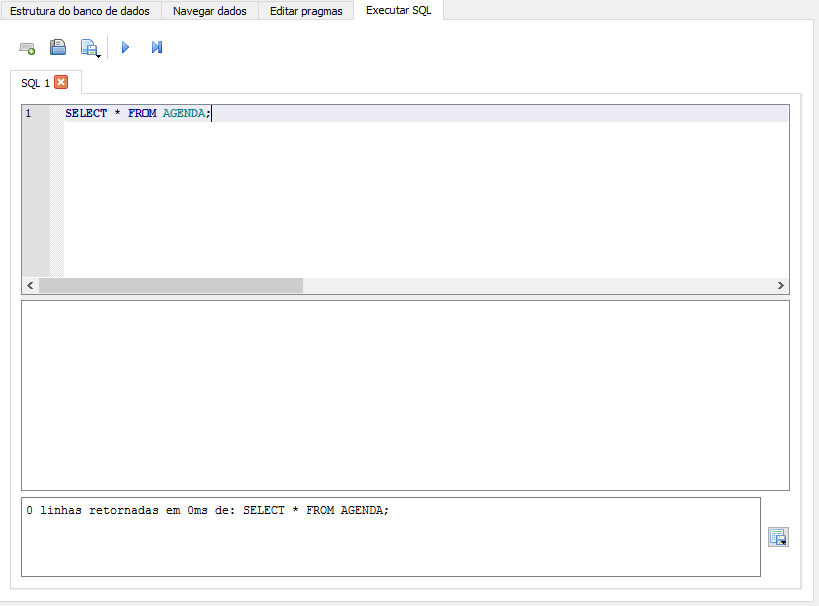

|
Neste artigo seremos introduzidos a uma aplicação gráfica para criação e manipulação de banco de dados SQLite. |
DB Browser for SQLite

O DB Browser for SQLite é uma ferramenta visual para manipulação de bases de dados SQLite. O programa vem sendo escrito em C++, constrói a parte gráfica com a biblioteca QT, multiplaforma, opensource e seu código está disponível para download no GitHub.
O programa é bastante simples e intuitivo, está construído numa única janela com algumas abas que apresentam formas diferentes de interagir com a estrutura do banco de dados SQLite ou com os registros contidos.
Essa ferramenta permite que programadores não familiariados com os comandos e variações consigamos modificar a estrutura, altera-la, adicionar, alterar e excluir registros e também, possui algumas poucas funcionalidades para manutenção de bases SQLite.
Por detrás dos panos, o DB Browser se comunicando com o arquivo como se o estivessemos fazendo via linha de comado, porém, o mesmo nos permite o manuseio de dados atráves de uma janela gráfica e um editor de código.
O DB Browser pode ter seu código baixado diretamente do GitHub e o projeto aceita implementações de terceiros, bastando somente envia-las e caso aprovadas, as mesmas serão adicionadas ao repositório oficial.
O programa DB Browser possui uma quantia mínima de botões e Menus, o que faz dele simples e poderoso. Todas as funcionalidade que podem ser feito através do uso de comandos pelo terminal teve uma adaptação gráfica.
Sendo o DB Browser uma ferramentea uma l, é possível acessar arquivos SQLite sem o conhecimento da linguagem declarativa SQL.
PRINCIPAIS RECURSOS
Abaixo temos uma listagem com os principais recursos.
- Criar e compactar arquivos de banco de dados
- Criar, definir, modificar e excluir tabelas
- Criar, definir e excluir índices
- Procurar, editar, adicionar e excluir registros
- Registros de pesquisa
- Importar e exportar registros como texto
- Importar e exportar tabelas de / para arquivos CSV
- Importar e exportar bases de dados de / para arquivos de despejo do SQL
- Emita consultas SQL e inspecione os resultados
- Examine um log de todos os comandos SQL emitidos pelo aplicativo
EDITOR DE TABELAS
O aba "Executar SQL" permite o envio de código SQL a base de dados e abaixo do editor é exibido a resposta referente a execução do código, conforme a imagem a seguir.
EDITOR DE SQL
As últimas versões do programam possuem junto ao editor de código SQL o recurso de Code Complete que nos mostra toda a lista de comando da linguagem, nome das tabelas ou então o a lista de nome das colunas.
VEJA TAMBÉM
LINKS EXTERNOS
Tags DB Browser sql, sql, sqlite, blog
Comentários
comments powered by Disqus